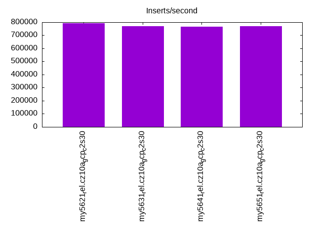
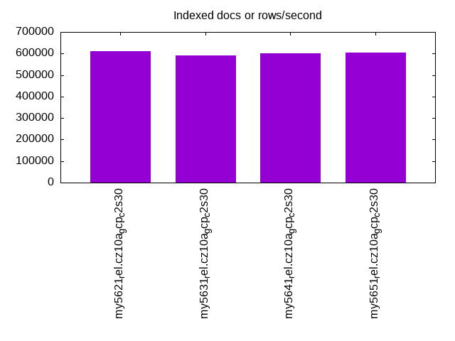
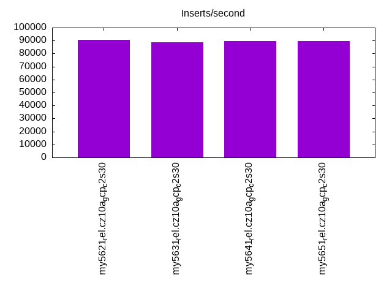
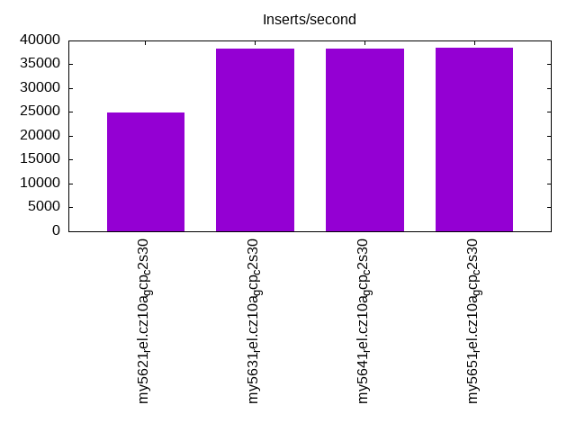
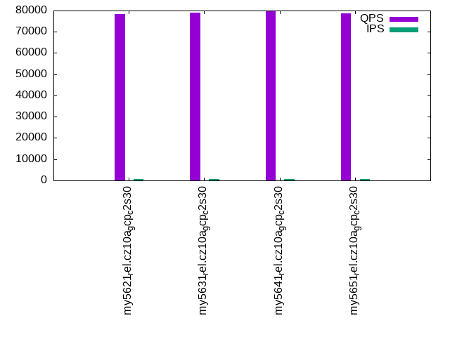
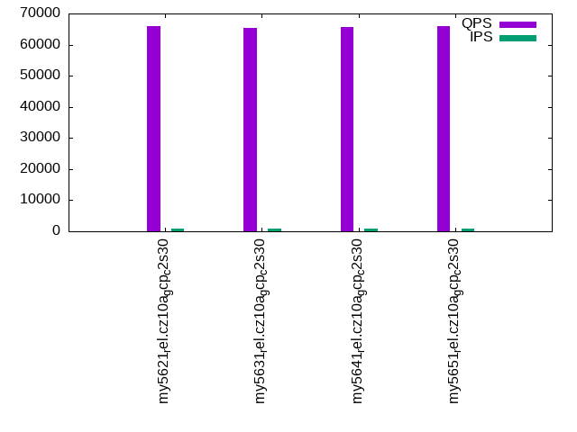
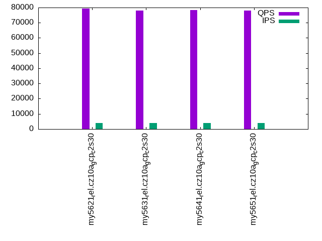
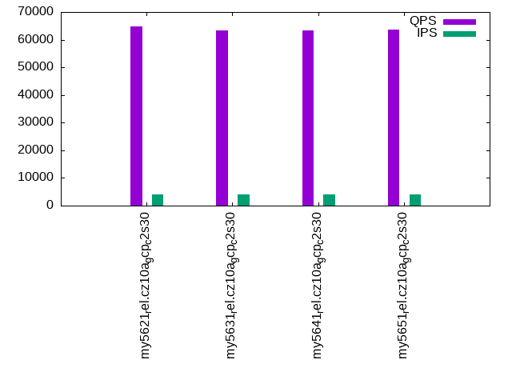
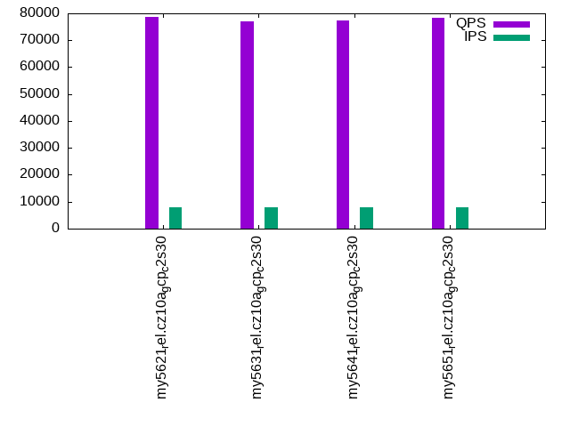
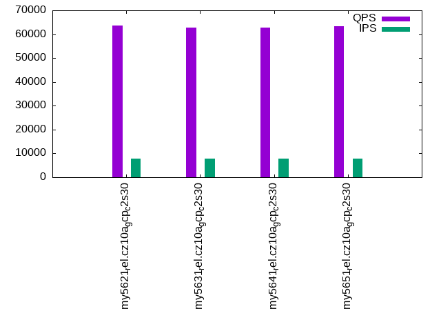

This is a report for the insert benchmark with 160M docs and 8 client(s). It is generated by scripts (bash, awk, sed) and Tufte might not be impressed. An overview of the insert benchmark is here and a short update is here. Below, by DBMS, I mean DBMS+version.config. An example is my8020.c10b40 where my means MySQL, 8020 is version 8.0.20 and c10b40 is the name for the configuration file.
The test server is a c2-standard-30 from GCP with 15 cores, hyperthreads disabled, Ubuntu 22.04 and XFS using SW RAID 0 over 4 local SSDs. The benchmark was run with 8 clients and there were 1, 2 or 3 connections per client. It uses 8 tables with a client per table. It loads 20M rows per table without secondary indexes, creates 3 secondary indexes per table, then inserts 50m+50m rows per table with a delete per insert to avoid growing the table. It then does 6 read+write tests for 1200s each that do queries as fast as possible with 100,100,500,500,1000,1000 inserts/s and the same for deletes/s per client concurrent with the queries. The database is cached in memory. Clients and the DBMS share one server. The per-database configs are in the per-database subdirectories here.
The tested DBMS are:
The numbers are inserts/s for l.i0, l.i1 and l.i2, indexed docs (or rows) /s for l.x and queries/s for qr100, qp100 thru qr1000, qp1000" The values are the average rate over the entire test for inserts (IPS) and queries (QPS). The range of values for IPS and QPS is split into 3 parts: bottom 25%, middle 50%, top 25%. Values in the bottom 25% have a red background, values in the top 25% have a green background and values in the middle have no color. A gray background is used for values that can be ignored because the DBMS did not sustain the target insert rate. Red backgrounds are not used when the minimum value is within 80% of the max value.
| dbms | l.i0 | l.x | l.i1 | l.i2 | qr100 | qp100 | qr500 | qp500 | qr1000 | qp1000 |
|---|---|---|---|---|---|---|---|---|---|---|
| my5621_rel.cz10a_gcp_c2s30 | 792079 | 610687 | 90549 | 24930 | 78402 | 66094 | 79412 | 64775 | 78534 | 63656 |
| my5631_rel.cz10a_gcp_c2s30 | 769231 | 590406 | 88889 | 38314 | 79102 | 65503 | 78008 | 63364 | 76865 | 62903 |
| my5641_rel.cz10a_gcp_c2s30 | 765550 | 601504 | 89410 | 38259 | 79506 | 65713 | 78237 | 63300 | 77339 | 62894 |
| my5651_rel.cz10a_gcp_c2s30 | 769231 | 603774 | 89510 | 38480 | 78677 | 65915 | 78153 | 63678 | 78333 | 63461 |
This table has relative throughput, throughput for the DBMS relative to the DBMS in the first line, using the absolute throughput from the previous table. Values less than 0.95 have a yellow background. Values greater than 1.05 have a blue background.
| dbms | l.i0 | l.x | l.i1 | l.i2 | qr100 | qp100 | qr500 | qp500 | qr1000 | qp1000 |
|---|---|---|---|---|---|---|---|---|---|---|
| my5621_rel.cz10a_gcp_c2s30 | 1.00 | 1.00 | 1.00 | 1.00 | 1.00 | 1.00 | 1.00 | 1.00 | 1.00 | 1.00 |
| my5631_rel.cz10a_gcp_c2s30 | 0.97 | 0.97 | 0.98 | 1.54 | 1.01 | 0.99 | 0.98 | 0.98 | 0.98 | 0.99 |
| my5641_rel.cz10a_gcp_c2s30 | 0.97 | 0.98 | 0.99 | 1.53 | 1.01 | 0.99 | 0.99 | 0.98 | 0.98 | 0.99 |
| my5651_rel.cz10a_gcp_c2s30 | 0.97 | 0.99 | 0.99 | 1.54 | 1.00 | 1.00 | 0.98 | 0.98 | 1.00 | 1.00 |
This lists the average rate of inserts/s for the tests that do inserts concurrent with queries. For such tests the query rate is listed in the table above. The read+write tests are setup so that the insert rate should match the target rate every second. Cells that are not at least 95% of the target have a red background to indicate a failure to satisfy the target.
| dbms | qr100.L1 | qp100.L2 | qr500.L3 | qp500.L4 | qr1000.L5 | qp1000.L6 |
|---|---|---|---|---|---|---|
| my5621_rel.cz10a_gcp_c2s30 | 794 | 794 | 3967 | 3967 | 7947 | 7947 |
| my5631_rel.cz10a_gcp_c2s30 | 793 | 794 | 3970 | 3970 | 7940 | 7940 |
| my5641_rel.cz10a_gcp_c2s30 | 794 | 794 | 3970 | 3967 | 7940 | 7940 |
| my5651_rel.cz10a_gcp_c2s30 | 794 | 794 | 3970 | 3967 | 7940 | 7947 |
| target | 800 | 800 | 4000 | 4000 | 8000 | 8000 |
l.i0: load without secondary indexes. Graphs for performance per 1-second interval are here.
Average throughput:
Insert response time histogram: each cell has the percentage of responses that take <= the time in the header and max is the max response time in seconds. For the max column values in the top 25% of the range have a red background and in the bottom 25% of the range have a green background. The red background is not used when the min value is within 80% of the max value.
| dbms | 256us | 1ms | 4ms | 16ms | 64ms | 256ms | 1s | 4s | 16s | gt | max |
|---|---|---|---|---|---|---|---|---|---|---|---|
| my5621_rel.cz10a_gcp_c2s30 | 98.055 | 1.827 | 0.016 | 0.031 | 0.070 | 0.001 | 0.300 | ||||
| my5631_rel.cz10a_gcp_c2s30 | 97.281 | 2.600 | 0.015 | 0.032 | 0.071 | 0.247 | |||||
| my5641_rel.cz10a_gcp_c2s30 | 97.325 | 2.557 | 0.017 | 0.033 | 0.068 | 0.253 | |||||
| my5651_rel.cz10a_gcp_c2s30 | 97.337 | 2.540 | 0.017 | 0.040 | 0.065 | 0.248 |
Performance metrics for the DBMS listed above. Some are normalized by throughput, others are not. Legend for results is here.
ips qps rps rmbps wps wmbps rpq rkbpq wpi wkbpi csps cpups cspq cpupq dbgb1 dbgb2 rss maxop p50 p99 tag 792079 0 0 0.0 1590.7 158.1 0.000 0.000 0.002 0.204 75363 70.6 0.095 13 10.6 75.1 15.6 0.300 107583 84109 my5621_rel.cz10a_gcp_c2s30 769231 0 0 0.0 1493.9 154.5 0.000 0.000 0.002 0.206 73830 70.6 0.096 14 10.6 75.1 16.7 0.247 103320 81413 my5631_rel.cz10a_gcp_c2s30 765550 0 0 0.0 1491.6 150.9 0.000 0.000 0.002 0.202 73872 70.5 0.096 14 10.6 75.1 16.8 0.253 103189 79914 my5641_rel.cz10a_gcp_c2s30 769231 0 0 0.0 1558.6 153.6 0.000 0.000 0.002 0.204 72311 70.7 0.094 14 10.6 75.1 16.8 0.248 103489 78739 my5651_rel.cz10a_gcp_c2s30
l.x: create secondary indexes.
Average throughput:
Performance metrics for the DBMS listed above. Some are normalized by throughput, others are not. Legend for results is here.
ips qps rps rmbps wps wmbps rpq rkbpq wpi wkbpi csps cpups cspq cpupq dbgb1 dbgb2 rss maxop p50 p99 tag 610687 0 0 0.0 8033.3 662.8 0.000 0.000 0.013 1.111 18846 41.0 0.031 10 22.3 86.8 27.3 0.001 NA NA my5621_rel.cz10a_gcp_c2s30 590406 0 0 0.0 7867.7 642.4 0.000 0.000 0.013 1.114 18477 40.7 0.031 10 22.3 86.8 28.6 0.001 NA NA my5631_rel.cz10a_gcp_c2s30 601504 0 0 0.0 7545.2 642.1 0.000 0.000 0.013 1.093 16718 41.1 0.028 10 22.3 86.8 27.0 0.001 NA NA my5641_rel.cz10a_gcp_c2s30 603774 0 0 0.0 7683.9 652.8 0.000 0.000 0.013 1.107 17162 41.5 0.028 10 22.3 86.8 27.2 0.001 NA NA my5651_rel.cz10a_gcp_c2s30
l.i1: continue load after secondary indexes created with 50 inserts per transaction. Graphs for performance per 1-second interval are here.
Average throughput:
Insert response time histogram: each cell has the percentage of responses that take <= the time in the header and max is the max response time in seconds. For the max column values in the top 25% of the range have a red background and in the bottom 25% of the range have a green background. The red background is not used when the min value is within 80% of the max value.
| dbms | 256us | 1ms | 4ms | 16ms | 64ms | 256ms | 1s | 4s | 16s | gt | max |
|---|---|---|---|---|---|---|---|---|---|---|---|
| my5621_rel.cz10a_gcp_c2s30 | 0.001 | 49.078 | 50.482 | 0.415 | 0.025 | 0.251 | |||||
| my5631_rel.cz10a_gcp_c2s30 | 0.001 | 47.372 | 52.188 | 0.416 | 0.023 | nonzero | 0.269 | ||||
| my5641_rel.cz10a_gcp_c2s30 | 0.001 | 48.012 | 51.550 | 0.413 | 0.024 | nonzero | 0.292 | ||||
| my5651_rel.cz10a_gcp_c2s30 | nonzero | 48.033 | 51.529 | 0.413 | 0.024 | nonzero | 0.271 |
Delete response time histogram: each cell has the percentage of responses that take <= the time in the header and max is the max response time in seconds. For the max column values in the top 25% of the range have a red background and in the bottom 25% of the range have a green background. The red background is not used when the min value is within 80% of the max value.
| dbms | 256us | 1ms | 4ms | 16ms | 64ms | 256ms | 1s | 4s | 16s | gt | max |
|---|---|---|---|---|---|---|---|---|---|---|---|
| my5621_rel.cz10a_gcp_c2s30 | 0.004 | 65.001 | 34.621 | 0.354 | 0.020 | 0.251 | |||||
| my5631_rel.cz10a_gcp_c2s30 | 0.004 | 62.708 | 36.914 | 0.355 | 0.019 | nonzero | 0.266 | ||||
| my5641_rel.cz10a_gcp_c2s30 | 0.004 | 63.988 | 35.637 | 0.351 | 0.019 | 0.250 | |||||
| my5651_rel.cz10a_gcp_c2s30 | 0.004 | 63.845 | 35.778 | 0.353 | 0.020 | 0.240 |
Performance metrics for the DBMS listed above. Some are normalized by throughput, others are not. Legend for results is here.
ips qps rps rmbps wps wmbps rpq rkbpq wpi wkbpi csps cpups cspq cpupq dbgb1 dbgb2 rss maxop p50 p99 tag 90549 0 1556 6.1 4849.4 183.0 0.017 0.069 0.054 2.070 148857 71.7 1.644 119 42.3 110.0 50.0 0.251 9689 7547 my5621_rel.cz10a_gcp_c2s30 88889 0 1549 6.1 4780.0 180.3 0.017 0.070 0.054 2.077 149408 72.0 1.681 122 41.6 108.9 49.0 0.269 9590 7444 my5631_rel.cz10a_gcp_c2s30 89410 0 1548 6.0 4836.5 181.7 0.017 0.069 0.054 2.081 149285 72.0 1.670 121 41.7 109.0 49.2 0.292 9640 7692 my5641_rel.cz10a_gcp_c2s30 89510 0 1558 6.1 4808.6 181.1 0.017 0.070 0.054 2.071 147661 72.3 1.650 121 41.6 108.8 48.9 0.271 9593 7542 my5651_rel.cz10a_gcp_c2s30
l.i2: continue load after secondary indexes created with 5 inserts per transaction. Graphs for performance per 1-second interval are here.
Average throughput:
Insert response time histogram: each cell has the percentage of responses that take <= the time in the header and max is the max response time in seconds. For the max column values in the top 25% of the range have a red background and in the bottom 25% of the range have a green background. The red background is not used when the min value is within 80% of the max value.
| dbms | 256us | 1ms | 4ms | 16ms | 64ms | 256ms | 1s | 4s | 16s | gt | max |
|---|---|---|---|---|---|---|---|---|---|---|---|
| my5621_rel.cz10a_gcp_c2s30 | 0.076 | 20.460 | 78.632 | 0.821 | 0.008 | 0.002 | 0.099 | ||||
| my5631_rel.cz10a_gcp_c2s30 | 3.358 | 58.367 | 37.775 | 0.446 | 0.053 | 0.001 | 0.231 | ||||
| my5641_rel.cz10a_gcp_c2s30 | 3.078 | 58.588 | 37.830 | 0.449 | 0.054 | 0.002 | 0.224 | ||||
| my5651_rel.cz10a_gcp_c2s30 | 3.434 | 58.636 | 37.427 | 0.449 | 0.052 | 0.002 | 0.232 |
Delete response time histogram: each cell has the percentage of responses that take <= the time in the header and max is the max response time in seconds. For the max column values in the top 25% of the range have a red background and in the bottom 25% of the range have a green background. The red background is not used when the min value is within 80% of the max value.
| dbms | 256us | 1ms | 4ms | 16ms | 64ms | 256ms | 1s | 4s | 16s | gt | max |
|---|---|---|---|---|---|---|---|---|---|---|---|
| my5621_rel.cz10a_gcp_c2s30 | 0.099 | 25.613 | 73.645 | 0.634 | 0.008 | 0.001 | 0.100 | ||||
| my5631_rel.cz10a_gcp_c2s30 | 5.244 | 58.646 | 35.692 | 0.364 | 0.052 | 0.001 | 0.232 | ||||
| my5641_rel.cz10a_gcp_c2s30 | 5.233 | 58.794 | 35.551 | 0.368 | 0.053 | 0.001 | 0.223 | ||||
| my5651_rel.cz10a_gcp_c2s30 | 5.631 | 58.736 | 35.211 | 0.370 | 0.051 | 0.002 | 0.232 |
Performance metrics for the DBMS listed above. Some are normalized by throughput, others are not. Legend for results is here.
ips qps rps rmbps wps wmbps rpq rkbpq wpi wkbpi csps cpups cspq cpupq dbgb1 dbgb2 rss maxop p50 p99 tag 24930 0 3828 15.0 2600.5 89.3 0.154 0.614 0.104 3.667 320999 63.1 12.876 380 42.3 110.5 50.6 0.099 3093 2837 my5621_rel.cz10a_gcp_c2s30 38314 0 1892 7.4 3840.0 138.0 0.049 0.198 0.100 3.689 247120 71.3 6.450 279 41.6 108.9 49.4 0.231 5554 2797 my5631_rel.cz10a_gcp_c2s30 38259 0 1877 7.3 3808.3 137.0 0.049 0.196 0.100 3.667 245860 71.4 6.426 280 41.7 109.0 49.5 0.224 5506 2782 my5641_rel.cz10a_gcp_c2s30 38480 0 1895 7.4 3805.7 137.1 0.049 0.197 0.099 3.648 246415 71.3 6.404 278 41.6 108.8 49.3 0.232 5559 2792 my5651_rel.cz10a_gcp_c2s30
qr100.L1: range queries with 100 insert/s per client. Graphs for performance per 1-second interval are here.
Average throughput:
Query response time histogram: each cell has the percentage of responses that take <= the time in the header and max is the max response time in seconds. For max values in the top 25% of the range have a red background and in the bottom 25% of the range have a green background. The red background is not used when the min value is within 80% of the max value.
| dbms | 256us | 1ms | 4ms | 16ms | 64ms | 256ms | 1s | 4s | 16s | gt | max |
|---|---|---|---|---|---|---|---|---|---|---|---|
| my5621_rel.cz10a_gcp_c2s30 | 99.926 | 0.065 | 0.006 | 0.003 | 0.015 | ||||||
| my5631_rel.cz10a_gcp_c2s30 | 99.954 | 0.041 | 0.004 | nonzero | 0.011 | ||||||
| my5641_rel.cz10a_gcp_c2s30 | 99.956 | 0.040 | 0.003 | nonzero | 0.010 | ||||||
| my5651_rel.cz10a_gcp_c2s30 | 99.954 | 0.041 | 0.004 | 0.001 | 0.011 |
Insert response time histogram: each cell has the percentage of responses that take <= the time in the header and max is the max response time in seconds. For max values in the top 25% of the range have a red background and in the bottom 25% of the range have a green background. The red background is not used when the min value is within 80% of the max value.
| dbms | 256us | 1ms | 4ms | 16ms | 64ms | 256ms | 1s | 4s | 16s | gt | max |
|---|---|---|---|---|---|---|---|---|---|---|---|
| my5621_rel.cz10a_gcp_c2s30 | 76.182 | 23.667 | 0.151 | 0.036 | |||||||
| my5631_rel.cz10a_gcp_c2s30 | 82.839 | 17.156 | 0.005 | 0.016 | |||||||
| my5641_rel.cz10a_gcp_c2s30 | 86.651 | 13.344 | 0.005 | 0.016 | |||||||
| my5651_rel.cz10a_gcp_c2s30 | 86.120 | 13.865 | 0.016 | 0.016 |
Delete response time histogram: each cell has the percentage of responses that take <= the time in the header and max is the max response time in seconds. For max values in the top 25% of the range have a red background and in the bottom 25% of the range have a green background. The red background is not used when the min value is within 80% of the max value.
| dbms | 256us | 1ms | 4ms | 16ms | 64ms | 256ms | 1s | 4s | 16s | gt | max |
|---|---|---|---|---|---|---|---|---|---|---|---|
| my5621_rel.cz10a_gcp_c2s30 | 0.068 | 88.703 | 11.104 | 0.125 | 0.036 | ||||||
| my5631_rel.cz10a_gcp_c2s30 | 0.109 | 88.760 | 11.125 | 0.005 | 0.017 | ||||||
| my5641_rel.cz10a_gcp_c2s30 | 0.078 | 91.542 | 8.375 | 0.005 | 0.018 | ||||||
| my5651_rel.cz10a_gcp_c2s30 | 0.094 | 90.958 | 8.932 | 0.016 | 0.020 |
Performance metrics for the DBMS listed above. Some are normalized by throughput, others are not. Legend for results is here.
ips qps rps rmbps wps wmbps rpq rkbpq wpi wkbpi csps cpups cspq cpupq dbgb1 dbgb2 rss maxop p50 p99 tag 794 78402 28 0.1 3772.4 115.6 0.000 0.001 4.751 149.110 302504 55.4 3.858 106 42.3 110.5 50.6 0.015 10165 6841 my5621_rel.cz10a_gcp_c2s30 793 79102 26 0.1 3704.3 112.2 0.000 0.001 4.669 144.863 308095 54.0 3.895 102 41.6 108.9 49.4 0.011 10085 9573 my5631_rel.cz10a_gcp_c2s30 794 79506 26 0.1 3335.2 101.1 0.000 0.001 4.200 130.359 308824 53.8 3.884 102 41.7 109.0 49.5 0.010 10197 9685 my5641_rel.cz10a_gcp_c2s30 794 78677 26 0.1 3520.6 106.7 0.000 0.001 4.434 137.614 305573 53.9 3.884 103 41.6 108.8 49.3 0.011 10005 9497 my5651_rel.cz10a_gcp_c2s30
qp100.L2: point queries with 100 insert/s per client. Graphs for performance per 1-second interval are here.
Average throughput:
Query response time histogram: each cell has the percentage of responses that take <= the time in the header and max is the max response time in seconds. For max values in the top 25% of the range have a red background and in the bottom 25% of the range have a green background. The red background is not used when the min value is within 80% of the max value.
| dbms | 256us | 1ms | 4ms | 16ms | 64ms | 256ms | 1s | 4s | 16s | gt | max |
|---|---|---|---|---|---|---|---|---|---|---|---|
| my5621_rel.cz10a_gcp_c2s30 | 99.932 | 0.064 | 0.004 | nonzero | 0.010 | ||||||
| my5631_rel.cz10a_gcp_c2s30 | 99.932 | 0.063 | 0.004 | nonzero | 0.010 | ||||||
| my5641_rel.cz10a_gcp_c2s30 | 99.931 | 0.065 | 0.004 | nonzero | 0.009 | ||||||
| my5651_rel.cz10a_gcp_c2s30 | 99.932 | 0.063 | 0.004 | nonzero | 0.009 |
Insert response time histogram: each cell has the percentage of responses that take <= the time in the header and max is the max response time in seconds. For max values in the top 25% of the range have a red background and in the bottom 25% of the range have a green background. The red background is not used when the min value is within 80% of the max value.
| dbms | 256us | 1ms | 4ms | 16ms | 64ms | 256ms | 1s | 4s | 16s | gt | max |
|---|---|---|---|---|---|---|---|---|---|---|---|
| my5621_rel.cz10a_gcp_c2s30 | 78.188 | 21.807 | 0.005 | 0.017 | |||||||
| my5631_rel.cz10a_gcp_c2s30 | 74.422 | 25.536 | 0.042 | 0.022 | |||||||
| my5641_rel.cz10a_gcp_c2s30 | 82.557 | 17.427 | 0.016 | 0.019 | |||||||
| my5651_rel.cz10a_gcp_c2s30 | 79.323 | 20.677 | 0.013 |
Delete response time histogram: each cell has the percentage of responses that take <= the time in the header and max is the max response time in seconds. For max values in the top 25% of the range have a red background and in the bottom 25% of the range have a green background. The red background is not used when the min value is within 80% of the max value.
| dbms | 256us | 1ms | 4ms | 16ms | 64ms | 256ms | 1s | 4s | 16s | gt | max |
|---|---|---|---|---|---|---|---|---|---|---|---|
| my5621_rel.cz10a_gcp_c2s30 | 0.005 | 86.625 | 13.370 | 0.015 | |||||||
| my5631_rel.cz10a_gcp_c2s30 | 84.333 | 15.661 | 0.005 | 0.016 | |||||||
| my5641_rel.cz10a_gcp_c2s30 | 0.036 | 90.198 | 9.766 | 0.015 | |||||||
| my5651_rel.cz10a_gcp_c2s30 | 0.010 | 88.193 | 11.797 | 0.012 |
Performance metrics for the DBMS listed above. Some are normalized by throughput, others are not. Legend for results is here.
ips qps rps rmbps wps wmbps rpq rkbpq wpi wkbpi csps cpups cspq cpupq dbgb1 dbgb2 rss maxop p50 p99 tag 794 66094 26 0.1 260.5 8.3 0.000 0.002 0.328 10.683 263839 53.4 3.992 121 42.3 110.5 50.6 0.010 8311 8042 my5621_rel.cz10a_gcp_c2s30 794 65503 26 0.1 565.1 17.5 0.000 0.002 0.712 22.512 261960 53.4 3.999 122 41.6 108.9 49.4 0.010 8263 8007 my5631_rel.cz10a_gcp_c2s30 794 65713 26 0.1 396.8 12.4 0.000 0.002 0.500 15.963 262552 53.4 3.995 122 41.7 109.0 49.6 0.009 8295 8039 my5641_rel.cz10a_gcp_c2s30 794 65915 26 0.1 12.3 0.8 0.000 0.002 0.015 0.994 262750 53.3 3.986 121 41.6 108.8 49.3 0.009 8311 8199 my5651_rel.cz10a_gcp_c2s30
qr500.L3: range queries with 500 insert/s per client. Graphs for performance per 1-second interval are here.
Average throughput:
Query response time histogram: each cell has the percentage of responses that take <= the time in the header and max is the max response time in seconds. For max values in the top 25% of the range have a red background and in the bottom 25% of the range have a green background. The red background is not used when the min value is within 80% of the max value.
| dbms | 256us | 1ms | 4ms | 16ms | 64ms | 256ms | 1s | 4s | 16s | gt | max |
|---|---|---|---|---|---|---|---|---|---|---|---|
| my5621_rel.cz10a_gcp_c2s30 | 99.806 | 0.164 | 0.029 | 0.001 | 0.011 | ||||||
| my5631_rel.cz10a_gcp_c2s30 | 99.685 | 0.276 | 0.038 | 0.001 | 0.010 | ||||||
| my5641_rel.cz10a_gcp_c2s30 | 99.688 | 0.274 | 0.038 | 0.001 | nonzero | 0.034 | |||||
| my5651_rel.cz10a_gcp_c2s30 | 99.688 | 0.274 | 0.037 | 0.001 | 0.012 |
Insert response time histogram: each cell has the percentage of responses that take <= the time in the header and max is the max response time in seconds. For max values in the top 25% of the range have a red background and in the bottom 25% of the range have a green background. The red background is not used when the min value is within 80% of the max value.
| dbms | 256us | 1ms | 4ms | 16ms | 64ms | 256ms | 1s | 4s | 16s | gt | max |
|---|---|---|---|---|---|---|---|---|---|---|---|
| my5621_rel.cz10a_gcp_c2s30 | 0.006 | 60.381 | 39.145 | 0.468 | 0.029 | ||||||
| my5631_rel.cz10a_gcp_c2s30 | 0.002 | 35.258 | 63.661 | 1.078 | 0.030 | ||||||
| my5641_rel.cz10a_gcp_c2s30 | 35.405 | 63.549 | 1.046 | 0.043 | |||||||
| my5651_rel.cz10a_gcp_c2s30 | 0.001 | 35.453 | 63.486 | 1.059 | 0.030 |
Delete response time histogram: each cell has the percentage of responses that take <= the time in the header and max is the max response time in seconds. For max values in the top 25% of the range have a red background and in the bottom 25% of the range have a green background. The red background is not used when the min value is within 80% of the max value.
| dbms | 256us | 1ms | 4ms | 16ms | 64ms | 256ms | 1s | 4s | 16s | gt | max |
|---|---|---|---|---|---|---|---|---|---|---|---|
| my5621_rel.cz10a_gcp_c2s30 | 0.572 | 67.303 | 31.869 | 0.256 | 0.029 | ||||||
| my5631_rel.cz10a_gcp_c2s30 | 0.015 | 43.356 | 55.995 | 0.634 | 0.029 | ||||||
| my5641_rel.cz10a_gcp_c2s30 | 0.016 | 44.289 | 55.150 | 0.546 | 0.043 | ||||||
| my5651_rel.cz10a_gcp_c2s30 | 0.022 | 43.601 | 55.780 | 0.597 | 0.027 |
Performance metrics for the DBMS listed above. Some are normalized by throughput, others are not. Legend for results is here.
ips qps rps rmbps wps wmbps rpq rkbpq wpi wkbpi csps cpups cspq cpupq dbgb1 dbgb2 rss maxop p50 p99 tag 3967 79412 50 0.2 21.7 2.7 0.001 0.003 0.005 0.685 303627 55.3 3.823 104 42.3 110.5 50.7 0.011 10021 9832 my5621_rel.cz10a_gcp_c2s30 3970 78008 113 0.4 21.3 2.6 0.001 0.006 0.005 0.665 300630 55.4 3.854 107 41.6 108.9 49.4 0.010 9849 9705 my5631_rel.cz10a_gcp_c2s30 3970 78237 111 0.4 21.8 2.5 0.001 0.006 0.005 0.655 301409 55.4 3.852 106 41.7 109.0 49.6 0.034 9925 9769 my5641_rel.cz10a_gcp_c2s30 3970 78153 114 0.4 20.7 2.5 0.001 0.006 0.005 0.634 301211 55.4 3.854 106 41.6 108.8 49.4 0.012 9813 9685 my5651_rel.cz10a_gcp_c2s30
qp500.L4: point queries with 500 insert/s per client. Graphs for performance per 1-second interval are here.
Average throughput:
Query response time histogram: each cell has the percentage of responses that take <= the time in the header and max is the max response time in seconds. For max values in the top 25% of the range have a red background and in the bottom 25% of the range have a green background. The red background is not used when the min value is within 80% of the max value.
| dbms | 256us | 1ms | 4ms | 16ms | 64ms | 256ms | 1s | 4s | 16s | gt | max |
|---|---|---|---|---|---|---|---|---|---|---|---|
| my5621_rel.cz10a_gcp_c2s30 | 99.826 | 0.145 | 0.028 | 0.001 | 0.013 | ||||||
| my5631_rel.cz10a_gcp_c2s30 | 99.643 | 0.324 | 0.032 | 0.001 | 0.011 | ||||||
| my5641_rel.cz10a_gcp_c2s30 | 99.618 | 0.348 | 0.034 | 0.001 | 0.011 | ||||||
| my5651_rel.cz10a_gcp_c2s30 | 99.637 | 0.328 | 0.034 | 0.001 | 0.012 |
Insert response time histogram: each cell has the percentage of responses that take <= the time in the header and max is the max response time in seconds. For max values in the top 25% of the range have a red background and in the bottom 25% of the range have a green background. The red background is not used when the min value is within 80% of the max value.
| dbms | 256us | 1ms | 4ms | 16ms | 64ms | 256ms | 1s | 4s | 16s | gt | max |
|---|---|---|---|---|---|---|---|---|---|---|---|
| my5621_rel.cz10a_gcp_c2s30 | 0.006 | 78.842 | 21.042 | 0.110 | 0.024 | ||||||
| my5631_rel.cz10a_gcp_c2s30 | 39.416 | 59.256 | 1.328 | 0.030 | |||||||
| my5641_rel.cz10a_gcp_c2s30 | 34.710 | 63.774 | 1.516 | 0.032 | |||||||
| my5651_rel.cz10a_gcp_c2s30 | 0.001 | 37.250 | 61.327 | 1.422 | 0.037 |
Delete response time histogram: each cell has the percentage of responses that take <= the time in the header and max is the max response time in seconds. For max values in the top 25% of the range have a red background and in the bottom 25% of the range have a green background. The red background is not used when the min value is within 80% of the max value.
| dbms | 256us | 1ms | 4ms | 16ms | 64ms | 256ms | 1s | 4s | 16s | gt | max |
|---|---|---|---|---|---|---|---|---|---|---|---|
| my5621_rel.cz10a_gcp_c2s30 | 0.435 | 85.002 | 14.503 | 0.059 | 0.022 | ||||||
| my5631_rel.cz10a_gcp_c2s30 | 0.057 | 47.721 | 51.490 | 0.732 | 0.031 | ||||||
| my5641_rel.cz10a_gcp_c2s30 | 0.010 | 43.703 | 55.393 | 0.894 | 0.031 | ||||||
| my5651_rel.cz10a_gcp_c2s30 | 0.049 | 45.358 | 53.719 | 0.874 | 0.037 |
Performance metrics for the DBMS listed above. Some are normalized by throughput, others are not. Legend for results is here.
ips qps rps rmbps wps wmbps rpq rkbpq wpi wkbpi csps cpups cspq cpupq dbgb1 dbgb2 rss maxop p50 p99 tag 3967 64775 0 0.0 1996.4 62.3 0.000 0.000 0.503 16.070 259918 55.4 4.013 128 42.3 110.5 50.7 0.013 8199 7800 my5621_rel.cz10a_gcp_c2s30 3970 63364 102 0.4 2316.5 71.9 0.002 0.006 0.583 18.541 258320 55.9 4.077 132 41.6 108.9 49.5 0.011 8023 7640 my5631_rel.cz10a_gcp_c2s30 3967 63300 111 0.4 1955.7 61.0 0.002 0.007 0.493 15.758 258024 55.7 4.076 132 41.7 109.0 49.6 0.011 7991 7624 my5641_rel.cz10a_gcp_c2s30 3967 63678 104 0.4 2400.6 74.4 0.002 0.007 0.605 19.199 259961 55.8 4.082 131 41.6 108.8 49.4 0.012 8087 7690 my5651_rel.cz10a_gcp_c2s30
qr1000.L5: range queries with 1000 insert/s per client. Graphs for performance per 1-second interval are here.
Average throughput:
Query response time histogram: each cell has the percentage of responses that take <= the time in the header and max is the max response time in seconds. For max values in the top 25% of the range have a red background and in the bottom 25% of the range have a green background. The red background is not used when the min value is within 80% of the max value.
| dbms | 256us | 1ms | 4ms | 16ms | 64ms | 256ms | 1s | 4s | 16s | gt | max |
|---|---|---|---|---|---|---|---|---|---|---|---|
| my5621_rel.cz10a_gcp_c2s30 | 99.740 | 0.200 | 0.058 | 0.002 | 0.015 | ||||||
| my5631_rel.cz10a_gcp_c2s30 | 99.727 | 0.209 | 0.061 | 0.002 | 0.014 | ||||||
| my5641_rel.cz10a_gcp_c2s30 | 99.730 | 0.206 | 0.062 | 0.002 | 0.013 | ||||||
| my5651_rel.cz10a_gcp_c2s30 | 99.762 | 0.180 | 0.055 | 0.002 | 0.015 |
Insert response time histogram: each cell has the percentage of responses that take <= the time in the header and max is the max response time in seconds. For max values in the top 25% of the range have a red background and in the bottom 25% of the range have a green background. The red background is not used when the min value is within 80% of the max value.
| dbms | 256us | 1ms | 4ms | 16ms | 64ms | 256ms | 1s | 4s | 16s | gt | max |
|---|---|---|---|---|---|---|---|---|---|---|---|
| my5621_rel.cz10a_gcp_c2s30 | 0.049 | 68.338 | 31.469 | 0.144 | 0.026 | ||||||
| my5631_rel.cz10a_gcp_c2s30 | 0.017 | 67.533 | 32.284 | 0.166 | 0.027 | ||||||
| my5641_rel.cz10a_gcp_c2s30 | 0.010 | 67.059 | 32.771 | 0.160 | 0.028 | ||||||
| my5651_rel.cz10a_gcp_c2s30 | 0.027 | 72.604 | 27.208 | 0.161 | 0.030 |
Delete response time histogram: each cell has the percentage of responses that take <= the time in the header and max is the max response time in seconds. For max values in the top 25% of the range have a red background and in the bottom 25% of the range have a green background. The red background is not used when the min value is within 80% of the max value.
| dbms | 256us | 1ms | 4ms | 16ms | 64ms | 256ms | 1s | 4s | 16s | gt | max |
|---|---|---|---|---|---|---|---|---|---|---|---|
| my5621_rel.cz10a_gcp_c2s30 | 0.754 | 76.463 | 22.698 | 0.085 | 0.026 | ||||||
| my5631_rel.cz10a_gcp_c2s30 | 0.364 | 76.298 | 23.233 | 0.105 | 0.029 | ||||||
| my5641_rel.cz10a_gcp_c2s30 | 0.539 | 75.791 | 23.565 | 0.105 | 0.029 | ||||||
| my5651_rel.cz10a_gcp_c2s30 | 0.749 | 80.275 | 18.875 | 0.101 | 0.028 |
Performance metrics for the DBMS listed above. Some are normalized by throughput, others are not. Legend for results is here.
ips qps rps rmbps wps wmbps rpq rkbpq wpi wkbpi csps cpups cspq cpupq dbgb1 dbgb2 rss maxop p50 p99 tag 7947 78534 1 0.0 742.8 26.4 0.000 0.000 0.093 3.402 293420 57.3 3.736 109 42.3 110.5 50.7 0.015 9929 9722 my5621_rel.cz10a_gcp_c2s30 7940 76865 0 0.0 1668.4 54.3 0.000 0.000 0.210 7.001 289211 57.6 3.763 112 41.6 108.9 49.5 0.014 9701 9174 my5631_rel.cz10a_gcp_c2s30 7940 77339 0 0.0 769.7 27.1 0.000 0.000 0.097 3.499 289297 57.3 3.741 111 41.7 109.0 49.7 0.013 9859 9637 my5641_rel.cz10a_gcp_c2s30 7940 78333 0 0.0 768.9 27.2 0.000 0.000 0.097 3.506 292616 57.3 3.736 110 41.6 108.8 49.4 0.015 9826 9557 my5651_rel.cz10a_gcp_c2s30
qp1000.L6: point queries with 1000 insert/s per client. Graphs for performance per 1-second interval are here.
Average throughput:
Query response time histogram: each cell has the percentage of responses that take <= the time in the header and max is the max response time in seconds. For max values in the top 25% of the range have a red background and in the bottom 25% of the range have a green background. The red background is not used when the min value is within 80% of the max value.
| dbms | 256us | 1ms | 4ms | 16ms | 64ms | 256ms | 1s | 4s | 16s | gt | max |
|---|---|---|---|---|---|---|---|---|---|---|---|
| my5621_rel.cz10a_gcp_c2s30 | 99.645 | 0.295 | 0.058 | 0.002 | nonzero | 0.018 | |||||
| my5631_rel.cz10a_gcp_c2s30 | 99.660 | 0.283 | 0.056 | 0.002 | 0.014 | ||||||
| my5641_rel.cz10a_gcp_c2s30 | 99.646 | 0.295 | 0.057 | 0.002 | 0.013 | ||||||
| my5651_rel.cz10a_gcp_c2s30 | 99.664 | 0.277 | 0.057 | 0.002 | 0.015 |
Insert response time histogram: each cell has the percentage of responses that take <= the time in the header and max is the max response time in seconds. For max values in the top 25% of the range have a red background and in the bottom 25% of the range have a green background. The red background is not used when the min value is within 80% of the max value.
| dbms | 256us | 1ms | 4ms | 16ms | 64ms | 256ms | 1s | 4s | 16s | gt | max |
|---|---|---|---|---|---|---|---|---|---|---|---|
| my5621_rel.cz10a_gcp_c2s30 | 0.010 | 66.450 | 33.310 | 0.229 | 0.032 | ||||||
| my5631_rel.cz10a_gcp_c2s30 | 0.012 | 67.656 | 32.108 | 0.224 | 0.027 | ||||||
| my5641_rel.cz10a_gcp_c2s30 | 0.008 | 66.647 | 33.109 | 0.235 | 0.031 | ||||||
| my5651_rel.cz10a_gcp_c2s30 | 0.004 | 68.024 | 31.701 | 0.271 | 0.030 |
Delete response time histogram: each cell has the percentage of responses that take <= the time in the header and max is the max response time in seconds. For max values in the top 25% of the range have a red background and in the bottom 25% of the range have a green background. The red background is not used when the min value is within 80% of the max value.
| dbms | 256us | 1ms | 4ms | 16ms | 64ms | 256ms | 1s | 4s | 16s | gt | max |
|---|---|---|---|---|---|---|---|---|---|---|---|
| my5621_rel.cz10a_gcp_c2s30 | 0.508 | 75.158 | 24.212 | 0.122 | 0.028 | ||||||
| my5631_rel.cz10a_gcp_c2s30 | 0.320 | 76.407 | 23.156 | 0.117 | 0.027 | ||||||
| my5641_rel.cz10a_gcp_c2s30 | 0.235 | 76.025 | 23.605 | 0.134 | 0.031 | ||||||
| my5651_rel.cz10a_gcp_c2s30 | 0.305 | 76.906 | 22.613 | 0.177 | 0.032 |
Performance metrics for the DBMS listed above. Some are normalized by throughput, others are not. Legend for results is here.
ips qps rps rmbps wps wmbps rpq rkbpq wpi wkbpi csps cpups cspq cpupq dbgb1 dbgb2 rss maxop p50 p99 tag 7947 63656 1 0.0 1494.4 49.1 0.000 0.000 0.188 6.331 250128 57.4 3.929 135 42.3 110.5 50.8 0.018 8058 7687 my5621_rel.cz10a_gcp_c2s30 7940 62903 0 0.0 1934.0 62.3 0.000 0.000 0.244 8.031 247846 57.8 3.940 138 41.6 108.9 49.5 0.014 7959 7544 my5631_rel.cz10a_gcp_c2s30 7940 62894 0 0.0 1393.4 46.0 0.000 0.000 0.175 5.931 247012 57.6 3.927 137 41.7 109.0 49.7 0.013 7959 7560 my5641_rel.cz10a_gcp_c2s30 7947 63461 0 0.0 1509.2 49.5 0.000 0.000 0.190 6.377 249075 57.4 3.925 136 41.6 108.8 49.5 0.015 8055 7640 my5651_rel.cz10a_gcp_c2s30
l.i0: load without secondary indexes
Performance metrics for all DBMS, not just the ones listed above. Some are normalized by throughput, others are not. Legend for results is here.
ips qps rps rmbps wps wmbps rpq rkbpq wpi wkbpi csps cpups cspq cpupq dbgb1 dbgb2 rss maxop p50 p99 tag 792079 0 0 0.0 1590.7 158.1 0.000 0.000 0.002 0.204 75363 70.6 0.095 13 10.6 75.1 15.6 0.300 107583 84109 my5621_rel.cz10a_gcp_c2s30 769231 0 0 0.0 1493.9 154.5 0.000 0.000 0.002 0.206 73830 70.6 0.096 14 10.6 75.1 16.7 0.247 103320 81413 my5631_rel.cz10a_gcp_c2s30 765550 0 0 0.0 1491.6 150.9 0.000 0.000 0.002 0.202 73872 70.5 0.096 14 10.6 75.1 16.8 0.253 103189 79914 my5641_rel.cz10a_gcp_c2s30 769231 0 0 0.0 1558.6 153.6 0.000 0.000 0.002 0.204 72311 70.7 0.094 14 10.6 75.1 16.8 0.248 103489 78739 my5651_rel.cz10a_gcp_c2s30
l.x: create secondary indexes
Performance metrics for all DBMS, not just the ones listed above. Some are normalized by throughput, others are not. Legend for results is here.
ips qps rps rmbps wps wmbps rpq rkbpq wpi wkbpi csps cpups cspq cpupq dbgb1 dbgb2 rss maxop p50 p99 tag 610687 0 0 0.0 8033.3 662.8 0.000 0.000 0.013 1.111 18846 41.0 0.031 10 22.3 86.8 27.3 0.001 NA NA my5621_rel.cz10a_gcp_c2s30 590406 0 0 0.0 7867.7 642.4 0.000 0.000 0.013 1.114 18477 40.7 0.031 10 22.3 86.8 28.6 0.001 NA NA my5631_rel.cz10a_gcp_c2s30 601504 0 0 0.0 7545.2 642.1 0.000 0.000 0.013 1.093 16718 41.1 0.028 10 22.3 86.8 27.0 0.001 NA NA my5641_rel.cz10a_gcp_c2s30 603774 0 0 0.0 7683.9 652.8 0.000 0.000 0.013 1.107 17162 41.5 0.028 10 22.3 86.8 27.2 0.001 NA NA my5651_rel.cz10a_gcp_c2s30
l.i1: continue load after secondary indexes created with 50 inserts per transaction
Performance metrics for all DBMS, not just the ones listed above. Some are normalized by throughput, others are not. Legend for results is here.
ips qps rps rmbps wps wmbps rpq rkbpq wpi wkbpi csps cpups cspq cpupq dbgb1 dbgb2 rss maxop p50 p99 tag 90549 0 1556 6.1 4849.4 183.0 0.017 0.069 0.054 2.070 148857 71.7 1.644 119 42.3 110.0 50.0 0.251 9689 7547 my5621_rel.cz10a_gcp_c2s30 88889 0 1549 6.1 4780.0 180.3 0.017 0.070 0.054 2.077 149408 72.0 1.681 122 41.6 108.9 49.0 0.269 9590 7444 my5631_rel.cz10a_gcp_c2s30 89410 0 1548 6.0 4836.5 181.7 0.017 0.069 0.054 2.081 149285 72.0 1.670 121 41.7 109.0 49.2 0.292 9640 7692 my5641_rel.cz10a_gcp_c2s30 89510 0 1558 6.1 4808.6 181.1 0.017 0.070 0.054 2.071 147661 72.3 1.650 121 41.6 108.8 48.9 0.271 9593 7542 my5651_rel.cz10a_gcp_c2s30
l.i2: continue load after secondary indexes created with 5 inserts per transaction
Performance metrics for all DBMS, not just the ones listed above. Some are normalized by throughput, others are not. Legend for results is here.
ips qps rps rmbps wps wmbps rpq rkbpq wpi wkbpi csps cpups cspq cpupq dbgb1 dbgb2 rss maxop p50 p99 tag 24930 0 3828 15.0 2600.5 89.3 0.154 0.614 0.104 3.667 320999 63.1 12.876 380 42.3 110.5 50.6 0.099 3093 2837 my5621_rel.cz10a_gcp_c2s30 38314 0 1892 7.4 3840.0 138.0 0.049 0.198 0.100 3.689 247120 71.3 6.450 279 41.6 108.9 49.4 0.231 5554 2797 my5631_rel.cz10a_gcp_c2s30 38259 0 1877 7.3 3808.3 137.0 0.049 0.196 0.100 3.667 245860 71.4 6.426 280 41.7 109.0 49.5 0.224 5506 2782 my5641_rel.cz10a_gcp_c2s30 38480 0 1895 7.4 3805.7 137.1 0.049 0.197 0.099 3.648 246415 71.3 6.404 278 41.6 108.8 49.3 0.232 5559 2792 my5651_rel.cz10a_gcp_c2s30
qr100.L1: range queries with 100 insert/s per client
Performance metrics for all DBMS, not just the ones listed above. Some are normalized by throughput, others are not. Legend for results is here.
ips qps rps rmbps wps wmbps rpq rkbpq wpi wkbpi csps cpups cspq cpupq dbgb1 dbgb2 rss maxop p50 p99 tag 794 78402 28 0.1 3772.4 115.6 0.000 0.001 4.751 149.110 302504 55.4 3.858 106 42.3 110.5 50.6 0.015 10165 6841 my5621_rel.cz10a_gcp_c2s30 793 79102 26 0.1 3704.3 112.2 0.000 0.001 4.669 144.863 308095 54.0 3.895 102 41.6 108.9 49.4 0.011 10085 9573 my5631_rel.cz10a_gcp_c2s30 794 79506 26 0.1 3335.2 101.1 0.000 0.001 4.200 130.359 308824 53.8 3.884 102 41.7 109.0 49.5 0.010 10197 9685 my5641_rel.cz10a_gcp_c2s30 794 78677 26 0.1 3520.6 106.7 0.000 0.001 4.434 137.614 305573 53.9 3.884 103 41.6 108.8 49.3 0.011 10005 9497 my5651_rel.cz10a_gcp_c2s30
qp100.L2: point queries with 100 insert/s per client
Performance metrics for all DBMS, not just the ones listed above. Some are normalized by throughput, others are not. Legend for results is here.
ips qps rps rmbps wps wmbps rpq rkbpq wpi wkbpi csps cpups cspq cpupq dbgb1 dbgb2 rss maxop p50 p99 tag 794 66094 26 0.1 260.5 8.3 0.000 0.002 0.328 10.683 263839 53.4 3.992 121 42.3 110.5 50.6 0.010 8311 8042 my5621_rel.cz10a_gcp_c2s30 794 65503 26 0.1 565.1 17.5 0.000 0.002 0.712 22.512 261960 53.4 3.999 122 41.6 108.9 49.4 0.010 8263 8007 my5631_rel.cz10a_gcp_c2s30 794 65713 26 0.1 396.8 12.4 0.000 0.002 0.500 15.963 262552 53.4 3.995 122 41.7 109.0 49.6 0.009 8295 8039 my5641_rel.cz10a_gcp_c2s30 794 65915 26 0.1 12.3 0.8 0.000 0.002 0.015 0.994 262750 53.3 3.986 121 41.6 108.8 49.3 0.009 8311 8199 my5651_rel.cz10a_gcp_c2s30
qr500.L3: range queries with 500 insert/s per client
Performance metrics for all DBMS, not just the ones listed above. Some are normalized by throughput, others are not. Legend for results is here.
ips qps rps rmbps wps wmbps rpq rkbpq wpi wkbpi csps cpups cspq cpupq dbgb1 dbgb2 rss maxop p50 p99 tag 3967 79412 50 0.2 21.7 2.7 0.001 0.003 0.005 0.685 303627 55.3 3.823 104 42.3 110.5 50.7 0.011 10021 9832 my5621_rel.cz10a_gcp_c2s30 3970 78008 113 0.4 21.3 2.6 0.001 0.006 0.005 0.665 300630 55.4 3.854 107 41.6 108.9 49.4 0.010 9849 9705 my5631_rel.cz10a_gcp_c2s30 3970 78237 111 0.4 21.8 2.5 0.001 0.006 0.005 0.655 301409 55.4 3.852 106 41.7 109.0 49.6 0.034 9925 9769 my5641_rel.cz10a_gcp_c2s30 3970 78153 114 0.4 20.7 2.5 0.001 0.006 0.005 0.634 301211 55.4 3.854 106 41.6 108.8 49.4 0.012 9813 9685 my5651_rel.cz10a_gcp_c2s30
qp500.L4: point queries with 500 insert/s per client
Performance metrics for all DBMS, not just the ones listed above. Some are normalized by throughput, others are not. Legend for results is here.
ips qps rps rmbps wps wmbps rpq rkbpq wpi wkbpi csps cpups cspq cpupq dbgb1 dbgb2 rss maxop p50 p99 tag 3967 64775 0 0.0 1996.4 62.3 0.000 0.000 0.503 16.070 259918 55.4 4.013 128 42.3 110.5 50.7 0.013 8199 7800 my5621_rel.cz10a_gcp_c2s30 3970 63364 102 0.4 2316.5 71.9 0.002 0.006 0.583 18.541 258320 55.9 4.077 132 41.6 108.9 49.5 0.011 8023 7640 my5631_rel.cz10a_gcp_c2s30 3967 63300 111 0.4 1955.7 61.0 0.002 0.007 0.493 15.758 258024 55.7 4.076 132 41.7 109.0 49.6 0.011 7991 7624 my5641_rel.cz10a_gcp_c2s30 3967 63678 104 0.4 2400.6 74.4 0.002 0.007 0.605 19.199 259961 55.8 4.082 131 41.6 108.8 49.4 0.012 8087 7690 my5651_rel.cz10a_gcp_c2s30
qr1000.L5: range queries with 1000 insert/s per client
Performance metrics for all DBMS, not just the ones listed above. Some are normalized by throughput, others are not. Legend for results is here.
ips qps rps rmbps wps wmbps rpq rkbpq wpi wkbpi csps cpups cspq cpupq dbgb1 dbgb2 rss maxop p50 p99 tag 7947 78534 1 0.0 742.8 26.4 0.000 0.000 0.093 3.402 293420 57.3 3.736 109 42.3 110.5 50.7 0.015 9929 9722 my5621_rel.cz10a_gcp_c2s30 7940 76865 0 0.0 1668.4 54.3 0.000 0.000 0.210 7.001 289211 57.6 3.763 112 41.6 108.9 49.5 0.014 9701 9174 my5631_rel.cz10a_gcp_c2s30 7940 77339 0 0.0 769.7 27.1 0.000 0.000 0.097 3.499 289297 57.3 3.741 111 41.7 109.0 49.7 0.013 9859 9637 my5641_rel.cz10a_gcp_c2s30 7940 78333 0 0.0 768.9 27.2 0.000 0.000 0.097 3.506 292616 57.3 3.736 110 41.6 108.8 49.4 0.015 9826 9557 my5651_rel.cz10a_gcp_c2s30
qp1000.L6: point queries with 1000 insert/s per client
Performance metrics for all DBMS, not just the ones listed above. Some are normalized by throughput, others are not. Legend for results is here.
ips qps rps rmbps wps wmbps rpq rkbpq wpi wkbpi csps cpups cspq cpupq dbgb1 dbgb2 rss maxop p50 p99 tag 7947 63656 1 0.0 1494.4 49.1 0.000 0.000 0.188 6.331 250128 57.4 3.929 135 42.3 110.5 50.8 0.018 8058 7687 my5621_rel.cz10a_gcp_c2s30 7940 62903 0 0.0 1934.0 62.3 0.000 0.000 0.244 8.031 247846 57.8 3.940 138 41.6 108.9 49.5 0.014 7959 7544 my5631_rel.cz10a_gcp_c2s30 7940 62894 0 0.0 1393.4 46.0 0.000 0.000 0.175 5.931 247012 57.6 3.927 137 41.7 109.0 49.7 0.013 7959 7560 my5641_rel.cz10a_gcp_c2s30 7947 63461 0 0.0 1509.2 49.5 0.000 0.000 0.190 6.377 249075 57.4 3.925 136 41.6 108.8 49.5 0.015 8055 7640 my5651_rel.cz10a_gcp_c2s30
Insert response time histogram
256us 1ms 4ms 16ms 64ms 256ms 1s 4s 16s gt max tag 0.000 98.055 1.827 0.016 0.031 0.070 0.001 0.000 0.000 0.000 0.300 my5621_rel.cz10a_gcp_c2s30 0.000 97.281 2.600 0.015 0.032 0.071 0.000 0.000 0.000 0.000 0.247 my5631_rel.cz10a_gcp_c2s30 0.000 97.325 2.557 0.017 0.033 0.068 0.000 0.000 0.000 0.000 0.253 my5641_rel.cz10a_gcp_c2s30 0.000 97.337 2.540 0.017 0.040 0.065 0.000 0.000 0.000 0.000 0.248 my5651_rel.cz10a_gcp_c2s30
TODO - determine whether there is data for create index response time
Insert response time histogram
256us 1ms 4ms 16ms 64ms 256ms 1s 4s 16s gt max tag 0.000 0.001 49.078 50.482 0.415 0.025 0.000 0.000 0.000 0.000 0.251 my5621_rel.cz10a_gcp_c2s30 0.000 0.001 47.372 52.188 0.416 0.023 nonzero 0.000 0.000 0.000 0.269 my5631_rel.cz10a_gcp_c2s30 0.000 0.001 48.012 51.550 0.413 0.024 nonzero 0.000 0.000 0.000 0.292 my5641_rel.cz10a_gcp_c2s30 0.000 nonzero 48.033 51.529 0.413 0.024 nonzero 0.000 0.000 0.000 0.271 my5651_rel.cz10a_gcp_c2s30
Delete response time histogram
256us 1ms 4ms 16ms 64ms 256ms 1s 4s 16s gt max tag 0.000 0.004 65.001 34.621 0.354 0.020 0.000 0.000 0.000 0.000 0.251 my5621_rel.cz10a_gcp_c2s30 0.000 0.004 62.708 36.914 0.355 0.019 nonzero 0.000 0.000 0.000 0.266 my5631_rel.cz10a_gcp_c2s30 0.000 0.004 63.988 35.637 0.351 0.019 0.000 0.000 0.000 0.000 0.250 my5641_rel.cz10a_gcp_c2s30 0.000 0.004 63.845 35.778 0.353 0.020 0.000 0.000 0.000 0.000 0.240 my5651_rel.cz10a_gcp_c2s30
Insert response time histogram
256us 1ms 4ms 16ms 64ms 256ms 1s 4s 16s gt max tag 0.076 20.460 78.632 0.821 0.008 0.002 0.000 0.000 0.000 0.000 0.099 my5621_rel.cz10a_gcp_c2s30 3.358 58.367 37.775 0.446 0.053 0.001 0.000 0.000 0.000 0.000 0.231 my5631_rel.cz10a_gcp_c2s30 3.078 58.588 37.830 0.449 0.054 0.002 0.000 0.000 0.000 0.000 0.224 my5641_rel.cz10a_gcp_c2s30 3.434 58.636 37.427 0.449 0.052 0.002 0.000 0.000 0.000 0.000 0.232 my5651_rel.cz10a_gcp_c2s30
Delete response time histogram
256us 1ms 4ms 16ms 64ms 256ms 1s 4s 16s gt max tag 0.099 25.613 73.645 0.634 0.008 0.001 0.000 0.000 0.000 0.000 0.100 my5621_rel.cz10a_gcp_c2s30 5.244 58.646 35.692 0.364 0.052 0.001 0.000 0.000 0.000 0.000 0.232 my5631_rel.cz10a_gcp_c2s30 5.233 58.794 35.551 0.368 0.053 0.001 0.000 0.000 0.000 0.000 0.223 my5641_rel.cz10a_gcp_c2s30 5.631 58.736 35.211 0.370 0.051 0.002 0.000 0.000 0.000 0.000 0.232 my5651_rel.cz10a_gcp_c2s30
Query response time histogram
256us 1ms 4ms 16ms 64ms 256ms 1s 4s 16s gt max tag 99.926 0.065 0.006 0.003 0.000 0.000 0.000 0.000 0.000 0.000 0.015 my5621_rel.cz10a_gcp_c2s30 99.954 0.041 0.004 nonzero 0.000 0.000 0.000 0.000 0.000 0.000 0.011 my5631_rel.cz10a_gcp_c2s30 99.956 0.040 0.003 nonzero 0.000 0.000 0.000 0.000 0.000 0.000 0.010 my5641_rel.cz10a_gcp_c2s30 99.954 0.041 0.004 0.001 0.000 0.000 0.000 0.000 0.000 0.000 0.011 my5651_rel.cz10a_gcp_c2s30
Insert response time histogram
256us 1ms 4ms 16ms 64ms 256ms 1s 4s 16s gt max tag 0.000 0.000 76.182 23.667 0.151 0.000 0.000 0.000 0.000 0.000 0.036 my5621_rel.cz10a_gcp_c2s30 0.000 0.000 82.839 17.156 0.005 0.000 0.000 0.000 0.000 0.000 0.016 my5631_rel.cz10a_gcp_c2s30 0.000 0.000 86.651 13.344 0.005 0.000 0.000 0.000 0.000 0.000 0.016 my5641_rel.cz10a_gcp_c2s30 0.000 0.000 86.120 13.865 0.016 0.000 0.000 0.000 0.000 0.000 0.016 my5651_rel.cz10a_gcp_c2s30
Delete response time histogram
256us 1ms 4ms 16ms 64ms 256ms 1s 4s 16s gt max tag 0.000 0.068 88.703 11.104 0.125 0.000 0.000 0.000 0.000 0.000 0.036 my5621_rel.cz10a_gcp_c2s30 0.000 0.109 88.760 11.125 0.005 0.000 0.000 0.000 0.000 0.000 0.017 my5631_rel.cz10a_gcp_c2s30 0.000 0.078 91.542 8.375 0.005 0.000 0.000 0.000 0.000 0.000 0.018 my5641_rel.cz10a_gcp_c2s30 0.000 0.094 90.958 8.932 0.016 0.000 0.000 0.000 0.000 0.000 0.020 my5651_rel.cz10a_gcp_c2s30
Query response time histogram
256us 1ms 4ms 16ms 64ms 256ms 1s 4s 16s gt max tag 99.932 0.064 0.004 nonzero 0.000 0.000 0.000 0.000 0.000 0.000 0.010 my5621_rel.cz10a_gcp_c2s30 99.932 0.063 0.004 nonzero 0.000 0.000 0.000 0.000 0.000 0.000 0.010 my5631_rel.cz10a_gcp_c2s30 99.931 0.065 0.004 nonzero 0.000 0.000 0.000 0.000 0.000 0.000 0.009 my5641_rel.cz10a_gcp_c2s30 99.932 0.063 0.004 nonzero 0.000 0.000 0.000 0.000 0.000 0.000 0.009 my5651_rel.cz10a_gcp_c2s30
Insert response time histogram
256us 1ms 4ms 16ms 64ms 256ms 1s 4s 16s gt max tag 0.000 0.000 78.188 21.807 0.005 0.000 0.000 0.000 0.000 0.000 0.017 my5621_rel.cz10a_gcp_c2s30 0.000 0.000 74.422 25.536 0.042 0.000 0.000 0.000 0.000 0.000 0.022 my5631_rel.cz10a_gcp_c2s30 0.000 0.000 82.557 17.427 0.016 0.000 0.000 0.000 0.000 0.000 0.019 my5641_rel.cz10a_gcp_c2s30 0.000 0.000 79.323 20.677 0.000 0.000 0.000 0.000 0.000 0.000 0.013 my5651_rel.cz10a_gcp_c2s30
Delete response time histogram
256us 1ms 4ms 16ms 64ms 256ms 1s 4s 16s gt max tag 0.000 0.005 86.625 13.370 0.000 0.000 0.000 0.000 0.000 0.000 0.015 my5621_rel.cz10a_gcp_c2s30 0.000 0.000 84.333 15.661 0.005 0.000 0.000 0.000 0.000 0.000 0.016 my5631_rel.cz10a_gcp_c2s30 0.000 0.036 90.198 9.766 0.000 0.000 0.000 0.000 0.000 0.000 0.015 my5641_rel.cz10a_gcp_c2s30 0.000 0.010 88.193 11.797 0.000 0.000 0.000 0.000 0.000 0.000 0.012 my5651_rel.cz10a_gcp_c2s30
Query response time histogram
256us 1ms 4ms 16ms 64ms 256ms 1s 4s 16s gt max tag 99.806 0.164 0.029 0.001 0.000 0.000 0.000 0.000 0.000 0.000 0.011 my5621_rel.cz10a_gcp_c2s30 99.685 0.276 0.038 0.001 0.000 0.000 0.000 0.000 0.000 0.000 0.010 my5631_rel.cz10a_gcp_c2s30 99.688 0.274 0.038 0.001 nonzero 0.000 0.000 0.000 0.000 0.000 0.034 my5641_rel.cz10a_gcp_c2s30 99.688 0.274 0.037 0.001 0.000 0.000 0.000 0.000 0.000 0.000 0.012 my5651_rel.cz10a_gcp_c2s30
Insert response time histogram
256us 1ms 4ms 16ms 64ms 256ms 1s 4s 16s gt max tag 0.000 0.006 60.381 39.145 0.468 0.000 0.000 0.000 0.000 0.000 0.029 my5621_rel.cz10a_gcp_c2s30 0.000 0.002 35.258 63.661 1.078 0.000 0.000 0.000 0.000 0.000 0.030 my5631_rel.cz10a_gcp_c2s30 0.000 0.000 35.405 63.549 1.046 0.000 0.000 0.000 0.000 0.000 0.043 my5641_rel.cz10a_gcp_c2s30 0.000 0.001 35.453 63.486 1.059 0.000 0.000 0.000 0.000 0.000 0.030 my5651_rel.cz10a_gcp_c2s30
Delete response time histogram
256us 1ms 4ms 16ms 64ms 256ms 1s 4s 16s gt max tag 0.000 0.572 67.303 31.869 0.256 0.000 0.000 0.000 0.000 0.000 0.029 my5621_rel.cz10a_gcp_c2s30 0.000 0.015 43.356 55.995 0.634 0.000 0.000 0.000 0.000 0.000 0.029 my5631_rel.cz10a_gcp_c2s30 0.000 0.016 44.289 55.150 0.546 0.000 0.000 0.000 0.000 0.000 0.043 my5641_rel.cz10a_gcp_c2s30 0.000 0.022 43.601 55.780 0.597 0.000 0.000 0.000 0.000 0.000 0.027 my5651_rel.cz10a_gcp_c2s30
Query response time histogram
256us 1ms 4ms 16ms 64ms 256ms 1s 4s 16s gt max tag 99.826 0.145 0.028 0.001 0.000 0.000 0.000 0.000 0.000 0.000 0.013 my5621_rel.cz10a_gcp_c2s30 99.643 0.324 0.032 0.001 0.000 0.000 0.000 0.000 0.000 0.000 0.011 my5631_rel.cz10a_gcp_c2s30 99.618 0.348 0.034 0.001 0.000 0.000 0.000 0.000 0.000 0.000 0.011 my5641_rel.cz10a_gcp_c2s30 99.637 0.328 0.034 0.001 0.000 0.000 0.000 0.000 0.000 0.000 0.012 my5651_rel.cz10a_gcp_c2s30
Insert response time histogram
256us 1ms 4ms 16ms 64ms 256ms 1s 4s 16s gt max tag 0.000 0.006 78.842 21.042 0.110 0.000 0.000 0.000 0.000 0.000 0.024 my5621_rel.cz10a_gcp_c2s30 0.000 0.000 39.416 59.256 1.328 0.000 0.000 0.000 0.000 0.000 0.030 my5631_rel.cz10a_gcp_c2s30 0.000 0.000 34.710 63.774 1.516 0.000 0.000 0.000 0.000 0.000 0.032 my5641_rel.cz10a_gcp_c2s30 0.000 0.001 37.250 61.327 1.422 0.000 0.000 0.000 0.000 0.000 0.037 my5651_rel.cz10a_gcp_c2s30
Delete response time histogram
256us 1ms 4ms 16ms 64ms 256ms 1s 4s 16s gt max tag 0.000 0.435 85.002 14.503 0.059 0.000 0.000 0.000 0.000 0.000 0.022 my5621_rel.cz10a_gcp_c2s30 0.000 0.057 47.721 51.490 0.732 0.000 0.000 0.000 0.000 0.000 0.031 my5631_rel.cz10a_gcp_c2s30 0.000 0.010 43.703 55.393 0.894 0.000 0.000 0.000 0.000 0.000 0.031 my5641_rel.cz10a_gcp_c2s30 0.000 0.049 45.358 53.719 0.874 0.000 0.000 0.000 0.000 0.000 0.037 my5651_rel.cz10a_gcp_c2s30
Query response time histogram
256us 1ms 4ms 16ms 64ms 256ms 1s 4s 16s gt max tag 99.740 0.200 0.058 0.002 0.000 0.000 0.000 0.000 0.000 0.000 0.015 my5621_rel.cz10a_gcp_c2s30 99.727 0.209 0.061 0.002 0.000 0.000 0.000 0.000 0.000 0.000 0.014 my5631_rel.cz10a_gcp_c2s30 99.730 0.206 0.062 0.002 0.000 0.000 0.000 0.000 0.000 0.000 0.013 my5641_rel.cz10a_gcp_c2s30 99.762 0.180 0.055 0.002 0.000 0.000 0.000 0.000 0.000 0.000 0.015 my5651_rel.cz10a_gcp_c2s30
Insert response time histogram
256us 1ms 4ms 16ms 64ms 256ms 1s 4s 16s gt max tag 0.000 0.049 68.338 31.469 0.144 0.000 0.000 0.000 0.000 0.000 0.026 my5621_rel.cz10a_gcp_c2s30 0.000 0.017 67.533 32.284 0.166 0.000 0.000 0.000 0.000 0.000 0.027 my5631_rel.cz10a_gcp_c2s30 0.000 0.010 67.059 32.771 0.160 0.000 0.000 0.000 0.000 0.000 0.028 my5641_rel.cz10a_gcp_c2s30 0.000 0.027 72.604 27.208 0.161 0.000 0.000 0.000 0.000 0.000 0.030 my5651_rel.cz10a_gcp_c2s30
Delete response time histogram
256us 1ms 4ms 16ms 64ms 256ms 1s 4s 16s gt max tag 0.000 0.754 76.463 22.698 0.085 0.000 0.000 0.000 0.000 0.000 0.026 my5621_rel.cz10a_gcp_c2s30 0.000 0.364 76.298 23.233 0.105 0.000 0.000 0.000 0.000 0.000 0.029 my5631_rel.cz10a_gcp_c2s30 0.000 0.539 75.791 23.565 0.105 0.000 0.000 0.000 0.000 0.000 0.029 my5641_rel.cz10a_gcp_c2s30 0.000 0.749 80.275 18.875 0.101 0.000 0.000 0.000 0.000 0.000 0.028 my5651_rel.cz10a_gcp_c2s30
Query response time histogram
256us 1ms 4ms 16ms 64ms 256ms 1s 4s 16s gt max tag 99.645 0.295 0.058 0.002 nonzero 0.000 0.000 0.000 0.000 0.000 0.018 my5621_rel.cz10a_gcp_c2s30 99.660 0.283 0.056 0.002 0.000 0.000 0.000 0.000 0.000 0.000 0.014 my5631_rel.cz10a_gcp_c2s30 99.646 0.295 0.057 0.002 0.000 0.000 0.000 0.000 0.000 0.000 0.013 my5641_rel.cz10a_gcp_c2s30 99.664 0.277 0.057 0.002 0.000 0.000 0.000 0.000 0.000 0.000 0.015 my5651_rel.cz10a_gcp_c2s30
Insert response time histogram
256us 1ms 4ms 16ms 64ms 256ms 1s 4s 16s gt max tag 0.000 0.010 66.450 33.310 0.229 0.000 0.000 0.000 0.000 0.000 0.032 my5621_rel.cz10a_gcp_c2s30 0.000 0.012 67.656 32.108 0.224 0.000 0.000 0.000 0.000 0.000 0.027 my5631_rel.cz10a_gcp_c2s30 0.000 0.008 66.647 33.109 0.235 0.000 0.000 0.000 0.000 0.000 0.031 my5641_rel.cz10a_gcp_c2s30 0.000 0.004 68.024 31.701 0.271 0.000 0.000 0.000 0.000 0.000 0.030 my5651_rel.cz10a_gcp_c2s30
Delete response time histogram
256us 1ms 4ms 16ms 64ms 256ms 1s 4s 16s gt max tag 0.000 0.508 75.158 24.212 0.122 0.000 0.000 0.000 0.000 0.000 0.028 my5621_rel.cz10a_gcp_c2s30 0.000 0.320 76.407 23.156 0.117 0.000 0.000 0.000 0.000 0.000 0.027 my5631_rel.cz10a_gcp_c2s30 0.000 0.235 76.025 23.605 0.134 0.000 0.000 0.000 0.000 0.000 0.031 my5641_rel.cz10a_gcp_c2s30 0.000 0.305 76.906 22.613 0.177 0.000 0.000 0.000 0.000 0.000 0.032 my5651_rel.cz10a_gcp_c2s30